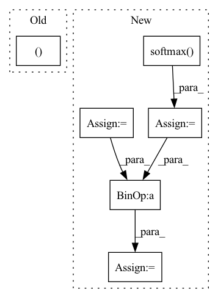

Pattern ID :3009

Before Change
def forward(self, g_s, f_s, g_t, f_t):
trans_loss_s, domain_acc_s = self._single_domain_forward(g_s, f_s, domain=1)
trans_loss_t, domain_acc_t = self._single_domain_forward(g_t, f_t, domain=0)
self.grl.step()
self.domain_discriminator_accuracy = 0.5 * (domain_acc_s + domain_acc_t)
return 0.5 * (trans_loss_s + trans_loss_t)
After Change
def forward(self, g_s, f_s, g_t, f_t):
f = torch.cat((f_s, f_t), dim=0)
g = torch.cat((g_s, g_t), dim=0)
g = F.softmax(g,dim=1).detach()
h = self.grl(self.map(f, g))
d = self.domain_discriminator(h)
d_label = torch.cat((
torch.ones((g_s.size(0), 1)).to(g_s.device),
torch.zeros((g_t.size(0), 1)).to(g_t.device),
))
weight = 1.0 + torch.exp(-entropy(g))
batch_size = f.size(0)
weight = weight / torch.sum(weight) * batch_size
self.domain_discriminator_accuracy = binary_accuracy(d, d_label)
return self.bce(d, d_label, weight.view_as(d))
In pattern: SUPERPATTERN
Frequency: 3
Non-data size: 6
Instances
Fragment ID: 16363610
Project Name: thuml/transfer-learning-library
Commit Name: 8477111b23336e7dd2d349a4b35b969240ff5871
Time: 2020-04-12
Author: 13126830206@163.com
File Name: dalib/adaptation/cdan.py
M Class Name: ConditionalDomainAdversarialLoss
N Class Name: ConditionalDomainAdversarialLoss
M Method Name: forward(5)
N Method Name: forward(5)
M Parent Class: nn.Module
N Parent Class: nn.Module
M File Name: dalib/adaptation/cdan.py
N File Name: dalib/adaptation/cdan.py
M Start Line: 86
M End Line: 90
N Start Line: 87
N End Line: 100
'>
Before Change
self.domain_discriminator_accuracy = None
def forward(self, g_s, f_s, g_t, f_t):
trans_loss_s, domain_acc_s = self._single_domain_forward(g_s, f_s, domain=1)
trans_loss_t, domain_acc_t = self._single_domain_forward(g_t, f_t, domain=0)
self.grl.step()
self.domain_discriminator_accuracy = 0.5 * (domain_acc_s + domain_acc_t)
After Change
def forward(self, g_s, f_s, g_t, f_t):
f = torch.cat((f_s, f_t), dim=0)
g = torch.cat((g_s, g_t), dim=0)
g = F.softmax(g,dim=1).detach()
h = self.grl(self.map(f, g))
d = self.domain_discriminator(h)
d_label = torch.cat((
torch.ones((g_s.size(0), 1)).to(g_s.device),
torch.zeros((g_t.size(0), 1)).to(g_t.device),
))
weight = 1.0 + torch.exp(-entropy(g))
batch_size = f.size(0)
weight = weight / torch.sum(weight) * batch_size
self.domain_discriminator_accuracy = binary_accuracy(d, d_label)
return self.bce(d, d_label, weight.view_as(d))
'>
Fragment ID: 16363711
Project Name: thuml/transfer-learning-library
Commit Name: 6dfc8e293ca2cbc4d116dc8ed0a6ef176dff0d06
Time: 2020-04-12
Author: 13126830206@163.com
File Name: dalib/adaptation/cdan.py
M Class Name: ConditionalDomainAdversarialLoss
N Class Name: ConditionalDomainAdversarialLoss
M Method Name: forward(5)
N Method Name: forward(5)
M Parent Class: nn.Module
N Parent Class: nn.Module
M File Name: dalib/adaptation/cdan.py
N File Name: dalib/adaptation/cdan.py
M Start Line: 86
M End Line: 90
N Start Line: 87
N End Line: 100
'>
Before Change
embedding = self.dropout(self.embed(x))
conv_in = embedding.permute(0, 2, 1)
conv_out = self.conv(conv_in)
values, indices = conv_out.max(dim=-1)
conv_out = conv_out.permute(2, 0, 1)
rnn_out, _ = self.rnn(conv_out)
attention = (self.mask * rnn_out).mean(dim=0)
After Change
attention = torch.tanh(
self.local2attn(rnn_out) + self.global2attn(global_rnn_out)
).permute(1, 0, 2)
alpha = F.softmax(attention.matmul(self.attn_scale), dim=-1)
rnn_out = rnn_out.permute(1, 0, 2)
memory = (alpha * rnn_out).sum(dim=1)
output = self.fc(memory).squeeze(1)
return output
'>
Fragment ID: 16363700
Project Name: jaketae/deep-malware-detection
Commit Name: e2f5ae102005c60e7e0db3dc31a8d9c23fce276b
Time: 2020-11-26
Author: jaesungtae@gmail.com
File Name: models.py
M Class Name: AttentionRCNN
N Class Name: AttentionRCNN
M Method Name: forward(2)
N Method Name: forward(2)
M Parent Class: nn.Module
N Parent Class: nn.Module
M File Name: models.py
N File Name: models.py
M Start Line: 186
M End Line: 194
N Start Line: 196
N End Line: 206